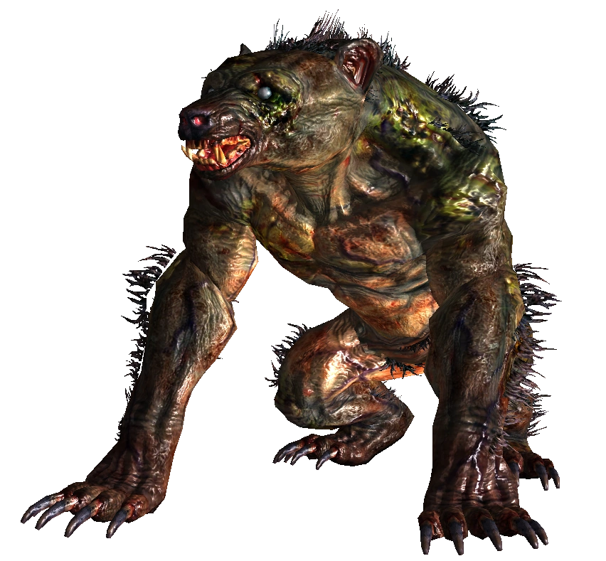
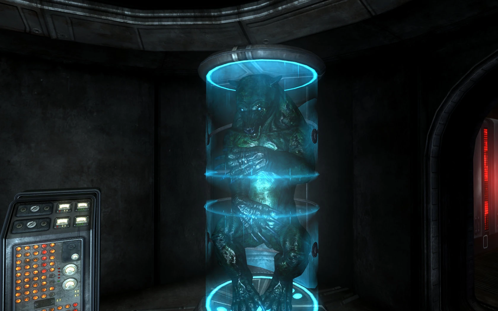
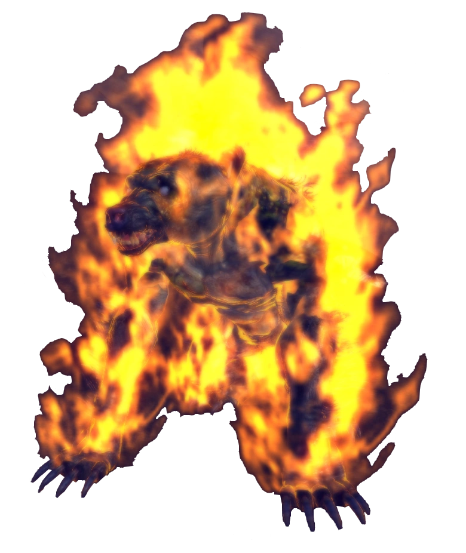
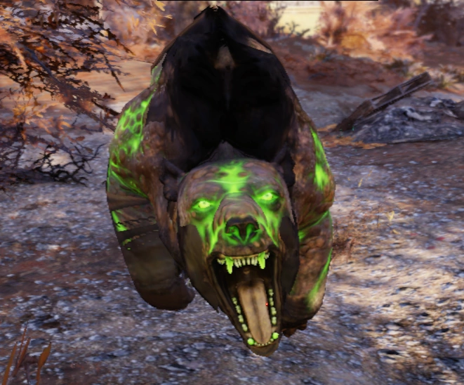
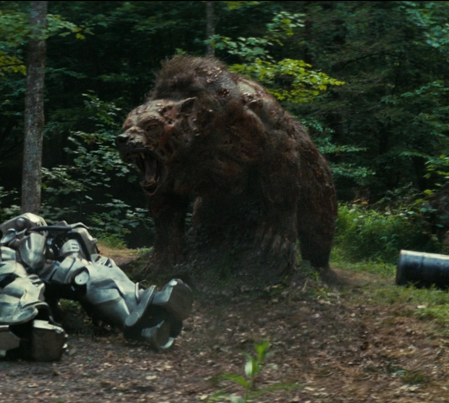
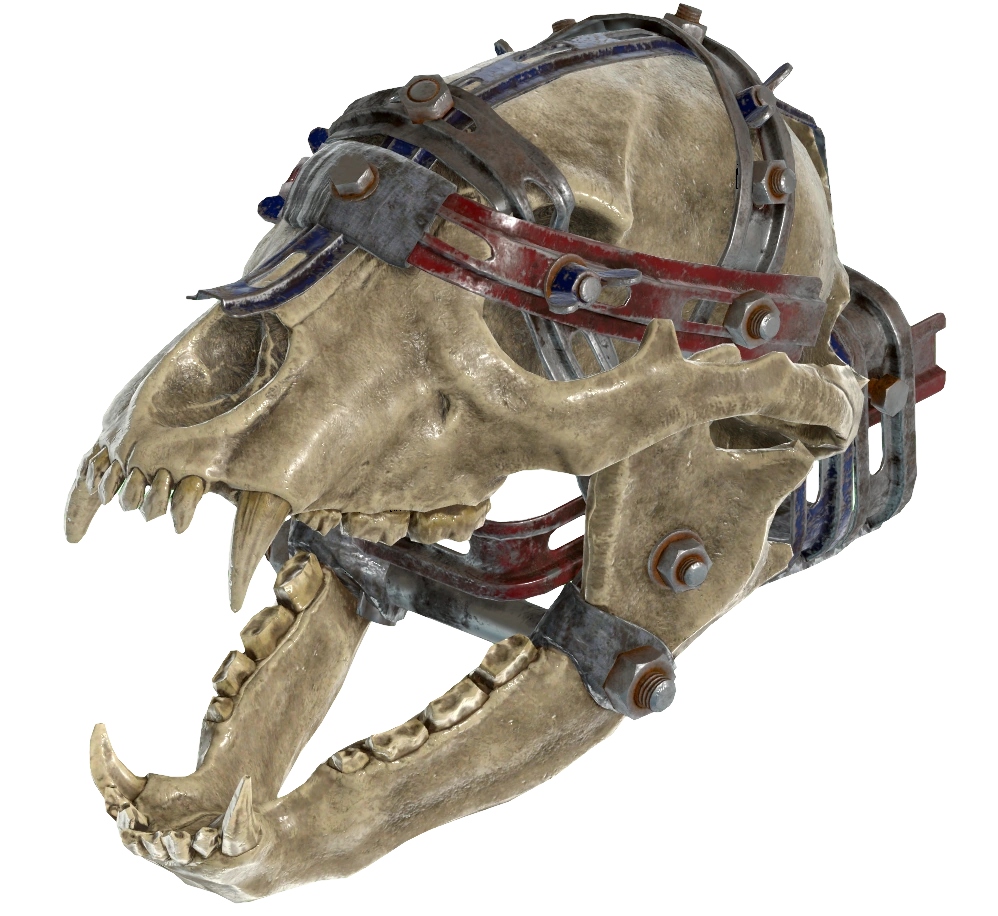

ヤオ・グアイ
Yao Guai
「ヤオ・グアイに餌をやらないでください。以上だ。」
―― スリードッグ（Fallout 3 ラジオ放送より）
概要
ヤオ・グアイは、放射線によって変異したアメリカクロクマの末裔である。
核戦争後のウェイストランドにおいて最も凶暴な捕食者の一つとして知られ、アパラチア、キャピタル・ウェイストランド、モハビ（ザイオン国立公園）、連邦、そして復興しつつあるロサンゼルス周辺など、北米大陸の広範囲に生息している。
その名称は、大戦前にアメリカ各地の強制収容所に拘留されていた中国系の人々の末裔が、この怪物を「妖怪（yāo guài）」と呼んだことに由来する。
歴史的背景と名称の由来
ヤオ・グアイという名は、Falloutの世界における暗い歴史の産物である。
大戦前、米国政府は中国系アメリカ人を「リトル・ヤンツェ」のような強制収容所に不当に拘留していた。
厳しい環境下に置かれた彼らやその子孫たちが、キャンプの周囲を徘徊する恐ろしい変異クマを指して、母国語で「怪物」や「悪魔」を意味する「妖怪（yāo guài）」と呼んだことが始まりとされる。
この名称は、戦後のウェイストランドを生き延びた他の生存者たちの間にも広まり、現在ではその種を指す一般的な名称として定着している。
生態と特徴
ヤオ・グアイは、戦前のクロクマが巨大化し、皮膚が剥き出しになるほど毛が抜け落ちた無惨な姿をしている。
しかし、その筋肉組織は異常に発達しており、時速50kmを超える速度で獲物を追跡し、鋭い爪と強靭な顎で一瞬のうちに引き裂く能力を持つ。
非常に攻撃的で、視界に入ったほぼすべての生物（時にはデスクローでさえも）に襲いかかるが、同種間では家族的な強い絆を持ち、子熊を守るために命を懸ける姿も確認されている。
また、驚くべきことに、一部の個体は人間によって家畜化されることもあり、スカベンジャーが旅の相棒として連れている例も見られる。

キャピタル・ウェイストランドやザイオンで見られる比較的毛深い個体（Fallout 3/New Vegas）
地域ごとの変異と特徴
キャピタル・ウェイストランド（Fallout 3）
東海岸のヤオ・グアイは、険しい丘陵地帯や洞窟を好んで生息している。
特に「ヤオ・グアイ・トンネル」には大規模な群れが形成されており、夜間に単独またはペアで狩りを行う夜行性の傾向が強い。
ポイント・ルックアウトでは、戦前のサーカス団で飼育されていた「ルズカ」という名の巨大な個体が知られている。

レイヴン・ロックでエンクレイヴによって極低温保存・研究されるヤオ・グアイ
ザイオン国立公園（Fallout: New Vegas）
「Honest Hearts」の舞台であるザイオンでは、他の地域に比べて戦前のクマに近い、厚い毛皮と体脂肪を持つ個体が生息している。
ここでは「ゴースト・オブ・シー（Ghost of She）」と呼ばれる伝説的な個体の噂があり、神聖なダチュラの根の茶を飲んだ者が、燃え盛る巨大なヤオ・グアイの幻覚を見るという儀式が存在する。

燃え盛る炎を纏った幻影、ゴースト・オブ・シー
連邦（Fallout 4）
ボストン周辺の個体は、キャピタルのものとは異なり、昼夜を問わず活動する。
特筆すべきは、その攻撃を受けた者が強烈な「よろめき」状態に陥ることであり、一度先手を取られると連続攻撃から逃れるのが非常に困難となる。
変異の幅も広く、放射能を蓄積し緑色に光る「発光ヤオ・グアイ」や、遺伝的欠陥による「アルビノ・ヤオ・グアイ」、さらには全身が傷跡と暗色の毛に覆われた最強の「ダスキー・ヤオ・グアイ」などが確認されている。
アパラチア（Fallout 76）
アパラチアの個体はザイオンの変種に似た体格をしており、よりクマに近い姿勢で移動する。
爆発物や火炎放射器に対して敏感に反応する性質が確認されている。
また、スコーチ病に感染した「スコーチ・ヤオ・グアイ」も存在し、スコーチ・ビーストの軍勢の一部として活動することもある。

放射能の影響で変質した発光個体
ロサンゼルス周辺（TVシリーズ）
2296年時点の「ワイルズ」と呼ばれる地域では、戦前の核廃棄物投棄場を巣にする個体が確認されている。
その戦闘能力は凄まじく、B.O.S.のT-60パワーアーマーの強固な装甲を爪で貫通し、中にいるナイトを致命傷に至らしめるほどの破壊力を見せつけた。

ドラマ版におけるヤオ・グアイ。ナイト・タイタスを圧倒する脅威として描かれた
主な変種一覧
| 名称 | 特徴 | 登場作品 |
|---|---|---|
| スタンテッド（発育不全） | 小型でmalformation（奇形）が見られる弱体化した個体。 | FO4, FO76 |
| シャギー（多毛） | より長く、逆立った毛を持つタフな個体。 | FO4, FO76 |
| ラビッド（狂犬病） | 病気に感染し、体中に赤い腫れ物がある極めて攻撃的な個体。 | FO4, FO76 |
| 発光ヤオ・グアイ | 体内に大量の放射能を蓄え、緑色の光を放つ。 | 全作品 |
| ダスキー（薄暗い） | 最も暗い体色を持ち、極めて高い攻撃力と体力を誇る。 | FO4, FO76 |
| ヤオ・グアイ・グール | ファー・ハーバーで確認された、グール化した個体。 | FO4 (FH) |
戦利品と利用
ヤオ・グアイは単なる脅威ではなく、貴重な資源でもある。
その肉は非常に栄養価が高く、「ヤオ・グアイ・ステーキ」や「ヤオ・グアイのリブ」として調理される。
また、その鋭い爪を利用した格闘武器「ヤオ・グアイ・ガントレット」や、アパラチアで開発された「ベアアーム」など、その身体部位は強力な武器の材料となる。

ヤオ・グアイの頭骨をそのまま利用した強力な格闘武器「ベアアーム」
現実世界との繋がり：ウェストバージニア州の象徴
『Fallout 76』の舞台であるウェストバージニア州において、ヤオ・グアイの変異前であるアメリカクロクマ（American Black Bear）は非常に重要な存在である。
1954年から1955年にかけて、州の天然資源局が学生や教師、スポーツマンを対象に行った投票により、アメリカクロクマは圧倒的な支持を得て州の象徴として選出された。
その後、1973年3月23日に正式に「ウェストバージニア州の州獣（Official State Animal）」として指定されている。
戦前のウェストバージニア州の象徴、アメリカクロクマ。現在は州全域の55郡すべてに生息している
ゲーム内では恐ろしい怪物として描かれるヤオ・グアイだが、そのルーツが地域の誇りである州獣であるという点は、核戦争が失わせた平和な自然への皮肉をより際立たせている。
開発秘話
- 中国語（北京語）で「yāo guài (妖怪)」は「怪物」や「魔物」を意味する。中国神話における「妖怪」は、虐げられた動物の霊や堕落した神獣が具現化したものとされることが多い。
- 初期のFallout 3コンセプトアートでは、名称の綴りが「yaogwai」となっていた。
- Fallout 3のモデルを担当したJonah Lobe氏は、後年のインタビューで「自分のワースト作品の一つ」と語っている。彼はモデルの出来に満足していなかったが、その歪な姿は結果としてウェイストランドの不気味な生態系を象徴するものとなった。
ヤオ・グアイはデスクローと並んで、ウェイストランドで「絶対に出会いたくない」クリーチャーの代表格ですね。特にFallout 4でのあの圧倒的な「ハメ」性能（連続よろめき）には、多くのプレイヤーが苦い思いをさせられたはずです。
一方で、その名前の由来が戦前の悲劇（中国系収容所）に繋がっているという設定は、Falloutらしい皮肉と歴史の深さを感じさせます。
最近ではドラマ版での「ナイト・タイタスを一瞬で戦闘不能にする」という大金星（？）を挙げたことで、その恐ろしさが改めて認識されました。パワーアーマーの装甲を紙のように引き裂く描写は、ゲーム内での恐怖を完璧に再現していたと言えるでしょう。
This article was created by translating and editing multiple entries including Yao guai from Nukapedia: The Fallout Wiki.
Licensed under the Creative Commons Attribution-Share Alike License (CC BY-SA 3.0).
© Overseer Mohi's Terminal — Fallout Lore Archive
コミュニティ維持のため、寄付を受け付けております。
> COMMENTS_